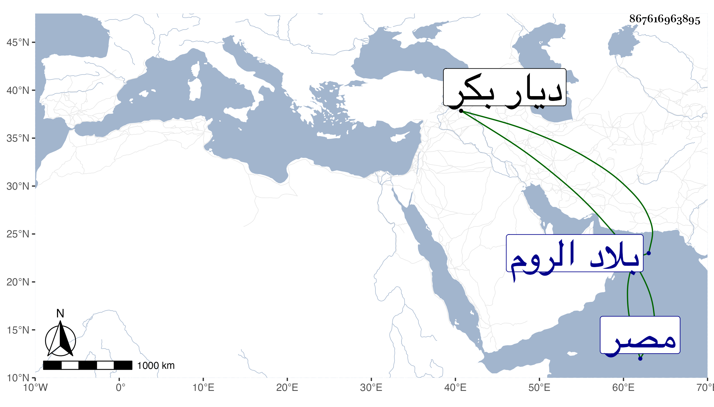

0902Sakhawi.DawLamic.ITO20230111-ara1.EIS1600.867616963895
Biography ID: 867616963895
872
إسحاق بن إبراهيم بن محمد بن علي بن قرمان الماضي أبوه . عهد إليه أبوه بمملكة بلاد قرمان مع كونه متأخرا عنده لكن لكراهته في محمد بن عثمان متملك الروم لكون أم بقية أولاده منهم بحيث كان يقول إن دام ملك إسحاق فاسم بني قرمان باق وإن انتزعه أحد من بقية أولادي صار الاسم لأعدائنا بني عثمان فكان كذلك لم يلبث أن عصى على إسحاق سائر إخوته وقام بنصرهم ابن عمتهم محمد بن عثمان فكانت حروب انكسر فيها وخاب ظنه في مساعدة صاحب مصر له وتوجه إلى حسن بك بن علي بك بن قرابلك متملك ديار بكر فمات هناك غريبا في أواخر المحرم سنة سبعين واشتهر إخوته بمملكة ابن قرمان غير أنهم مع ابن عثمان كاقل النواب والاسم لهم .
